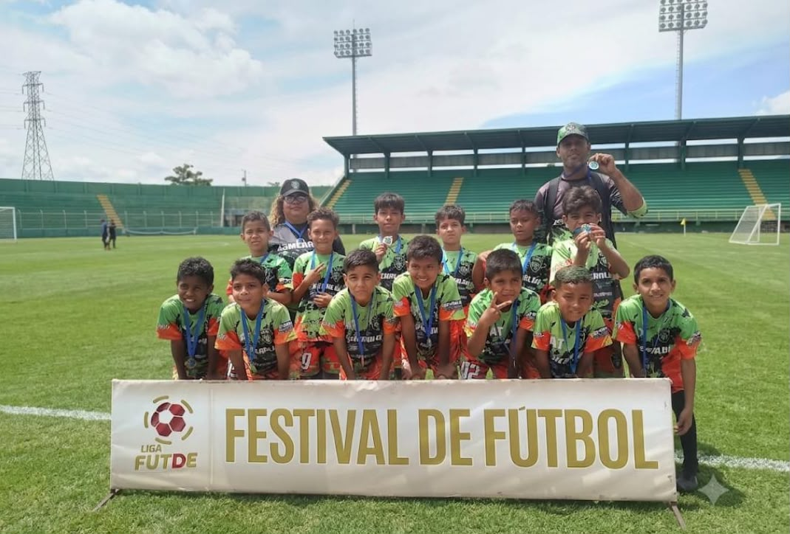
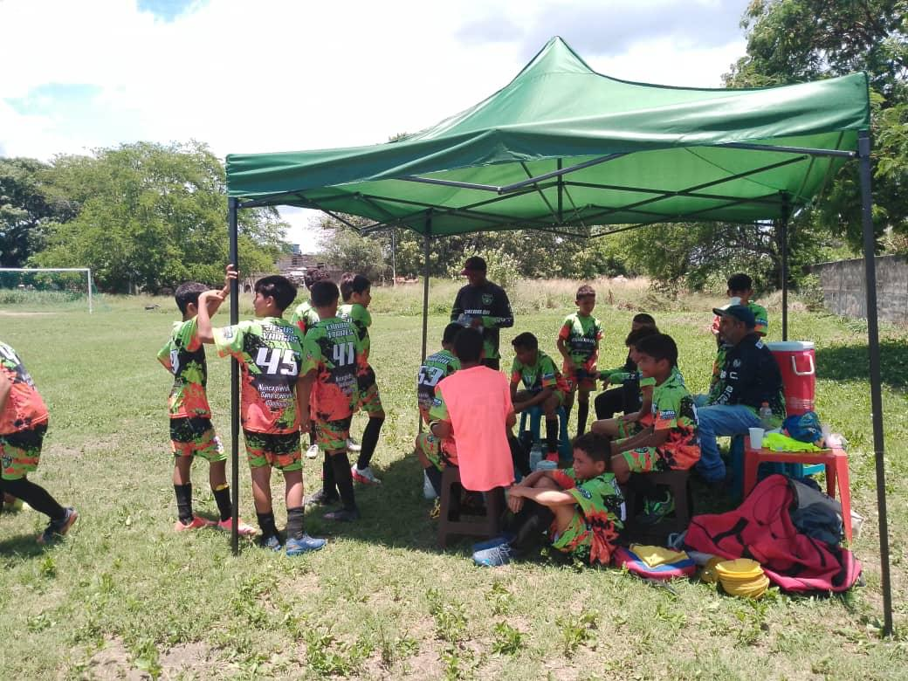
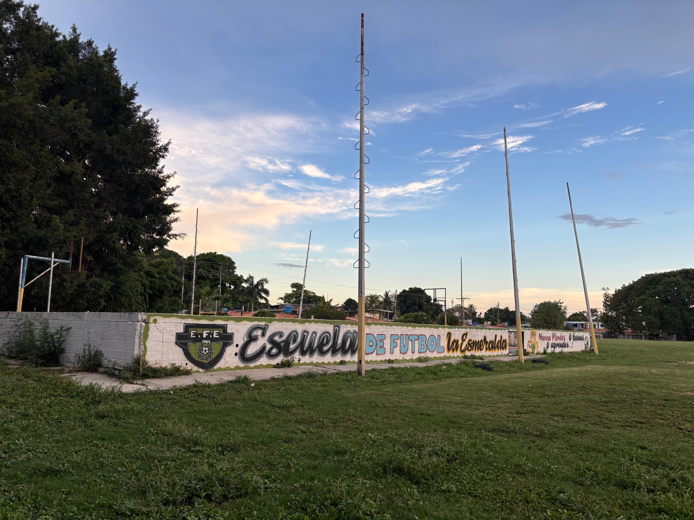

Nuestra Historia y Misión
Fundada el 23 de marzo de 1984 con la visión de brindar un espacio deportivo seguro en nuestra comunidad, la Academia La Esmeralda impulsa el talento local combinando pedagogía moderna, disciplina deportiva y compromiso social.

Cuerpo Técnico Calificado
Contamos con entrenadores licenciados en educación física y preparadores físicos certificados, capacitados para guiar a cada niño respetando su ritmo de aprendizaje y bienestar físico.

Nuestras Instalaciones
Entrenamos en una amplia cancha de césped natural al aire libre, ideal para el desarrollo físico y deportivo de los jugadores en contacto con la naturaleza. Además, el campo está rodeado de árboles frondosos que brindan sombra natural y un ambiente fresco, ofreciendo un espacio cómodo y familiar para que los padres y representantes acompañen a los jóvenes durante cada tarde de entrenamiento.
